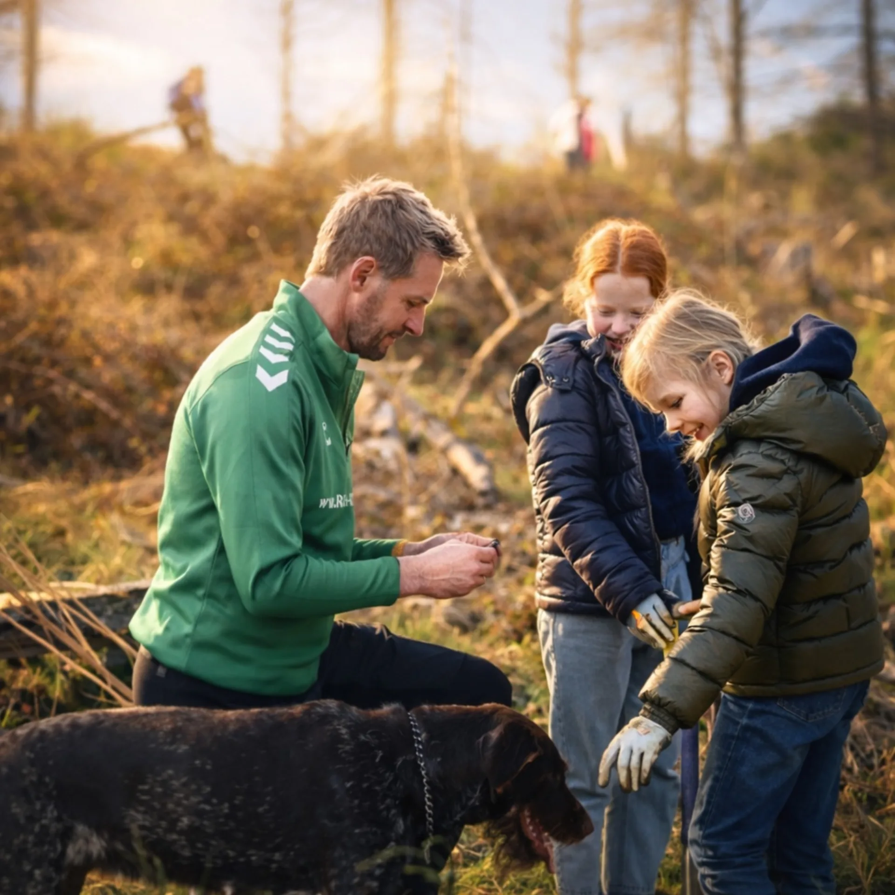
Dieter Könnes — Nachhaltigkeitsmoderator & Keynote-Speaker
Für Bühnen- und Podiumsdiskussionen rund um Nachhaltigkeit. Gründer der ROBIN GUT Stiftung — aus über 25 Jahren TV für eine enkelfähige Zukunft.
Wirkung mit Zahlen
Bäume bereits gepflanzt
Live-Sendungen im TV
Bühnen als Moderator & Speaker
Jahre Berufserfahrung
Partner von NRW pflanzt
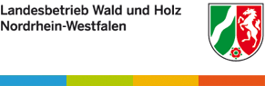
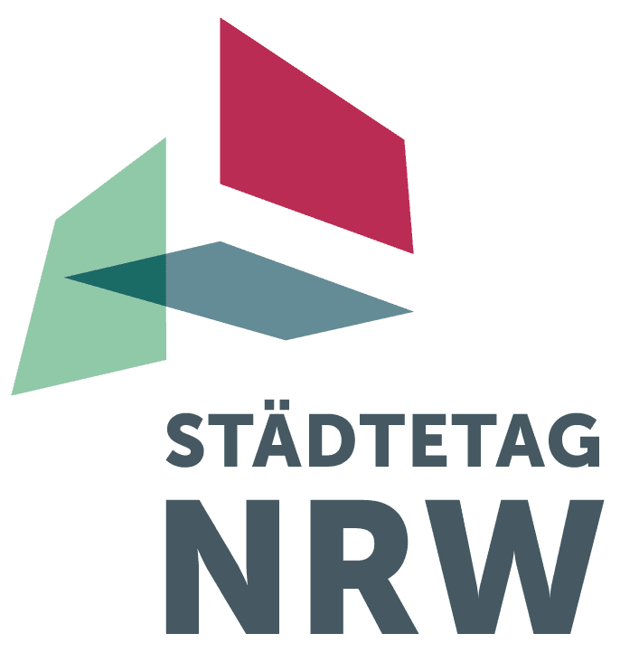
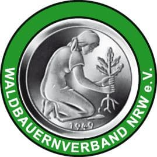
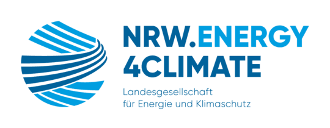
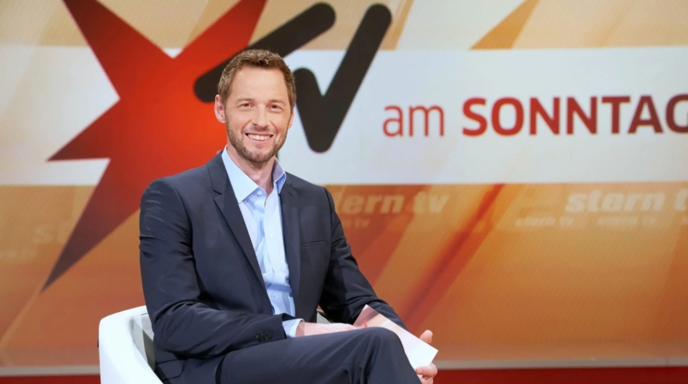
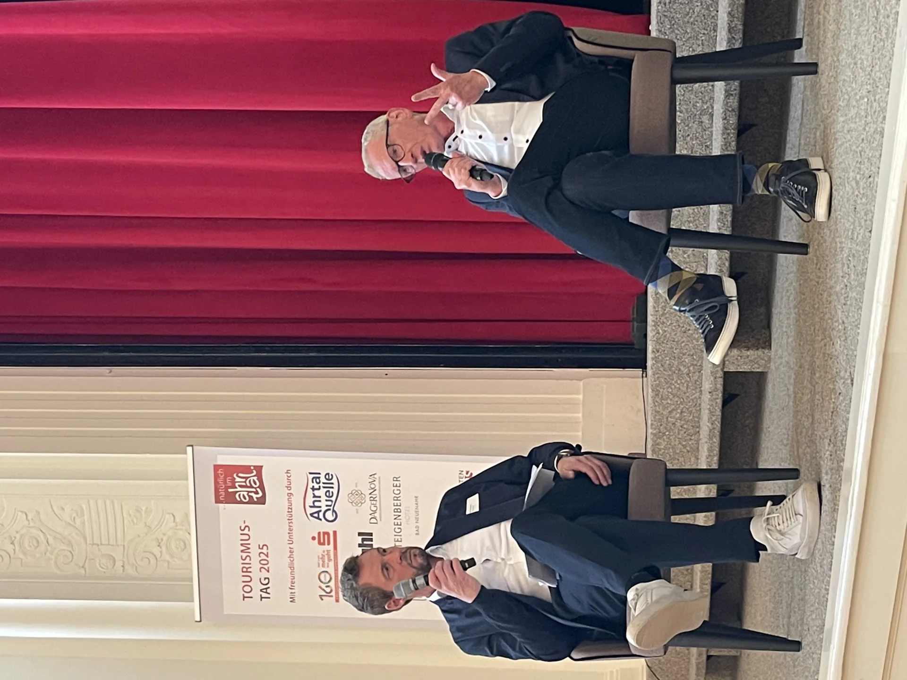
Woher er kommt
Über 25 Jahre und mehr als 1.000 Live-Sendungen stand Dieter Könnes vor der Kamera — bei WDR, RTL, Sport1, DSF und Sky. Sein Antrieb: Aufklärung, Klartext, komplexe Themen auf den Punkt bringen.
2021 kam er ins Ahrtal — als Reporter und Helfer zugleich. Was er dort erlebte, ließ ihn mehr wollen als berichten: helfen. Daraus entstand das Baumpflanzen und die ROBIN GUT Stiftung.
Aus dem Kampf für Aufklärung ist ein Wunsch geworden: sich für Nachhaltigkeit und eine enkelfähige Zukunft einzusetzen — und möglichst viele Menschen auf diese Reise mitzunehmen. Das ist heute seine Mission.
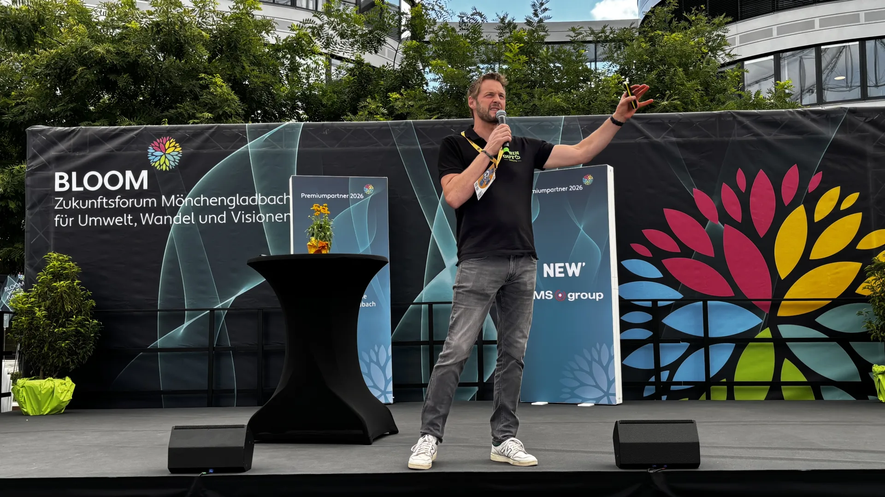
Warum gerade er
Podien zu Klima, CSR und Transformation moderiert hier jemand, der das Thema selbst lebt. Wer eine eigene Stiftung führt und Wälder pflanzt, stellt auf der Bühne die echten Fragen.
Und weil aus 25 Jahren Live-TV Souveränität wird: technische Panne, spontane Programmänderung, hitzige Diskussion — er hält Ihre Veranstaltung souverän auf Kurs, sicher beim ersten Take.
Zuletzt live: BLOOM Zukunftsforum Mönchengladbach für Umwelt, Wandel und Visionen.
So buchen Sie ihn
Bühnendiskussionen, Podiumsdiskussionen, Zukunftsforen und Kongresse rund um Klima, Umwelt und Nachhaltigkeit. Strukturiert, klar, mit echtem Themenverständnis.
Mehr & anfragen →Ein Vortrag, der mitnimmt: wie aus einer Begegnung im Ahrtal eine Mission für Klima und Umweltschutz wurde — und wie jeder Teil davon werden kann.
Mehr & anfragen →Für Führungskräfte: überzeugend vor Kamera, Mikrofon und Publikum. Kommunikation, die wirkt.
Mehr & anfragen →NRW pflanzt — live
Gemeinsam mit Schulen, Kommunen und Unternehmen entstehen artenreiche Mischwälder in ganz Nordrhein-Westfalen.
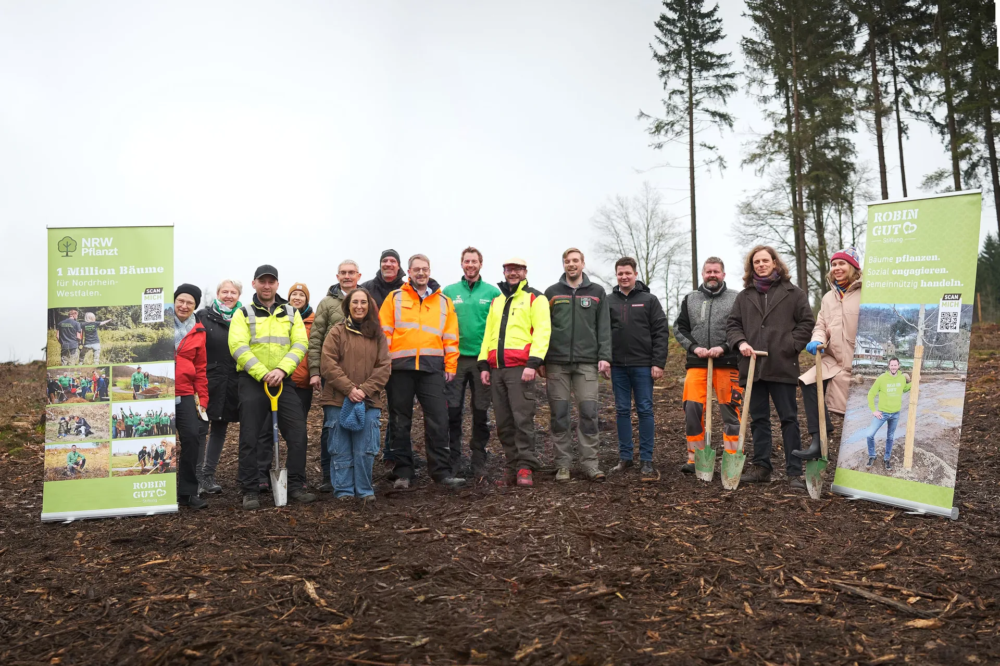
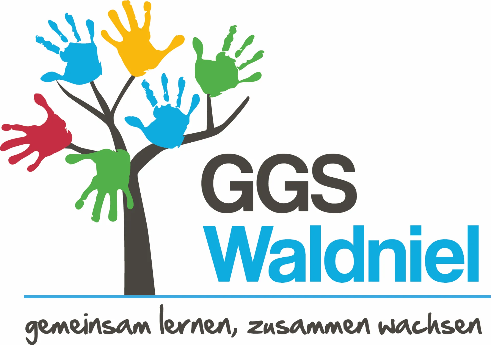
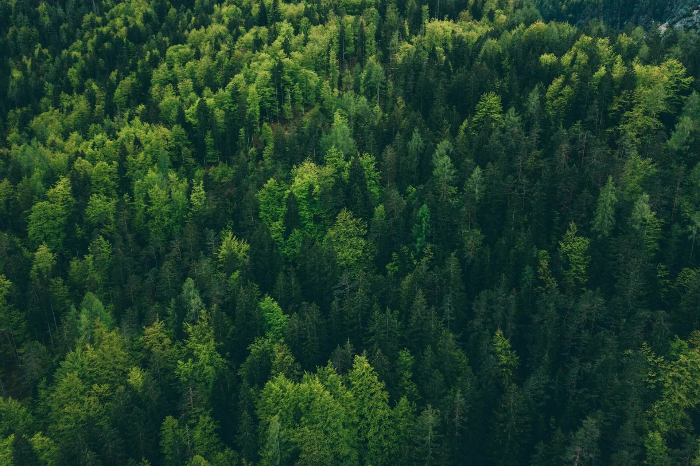
Das Besondere
Ein Angebot, das in Deutschland nur er machen kann: Wer Dieter Könnes bucht, unterstützt direkt NRW pflanzt. Ihr Event wird Teil eines echten Waldes — messbar, sichtbar, mit Zertifikat.
Häufige Fragen
Zukunftsforen, Nachhaltigkeits- und CSR-Kongresse, Energie-Podien, Fachtagungen, Preisverleihungen und Firmenevents — in NRW und deutschlandweit, auch als Keynote-Speaker. Online- und Hybrid-Formate sind möglich.
Dieter Könnes ist Gründer der ROBIN GUT Stiftung mit dem Ziel, 1 Million Bäume in NRW zu pflanzen (Projekt NRW pflanzt, Schirmherrschaft Ministerpräsident Hendrik Wüst). Er moderiert Nachhaltigkeitsthemen aus gelebter Überzeugung — als echtes Herzensthema.
Das Honorar hängt von Format, Dauer, Vorbereitung und Reiseweg ab. Anfragen werden in der Regel innerhalb von 24 Stunden individuell beantwortet.
Jede Buchung unterstützt direkt NRW pflanzt. Ihre Veranstaltung wird Teil eines echten Aufforstungsprojekts — ein glaubwürdiger Nachhaltigkeitsbeitrag, den Sie kommunizieren können.
30 Sekunden Anfrage. Dieter meldet sich persönlich — meist innerhalb von 24 Stunden.
Jetzt anfragen